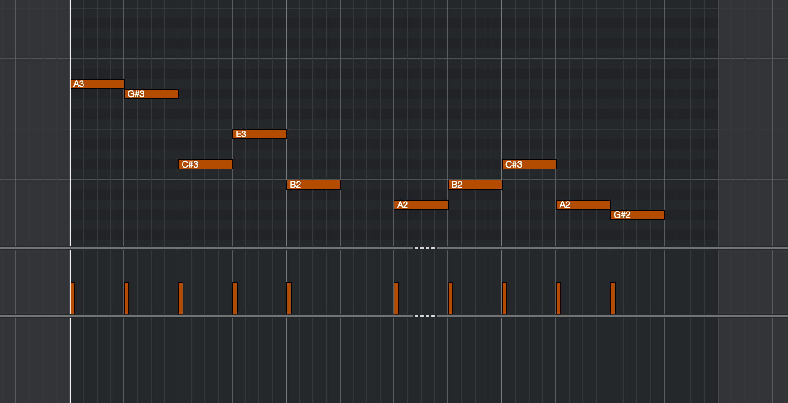
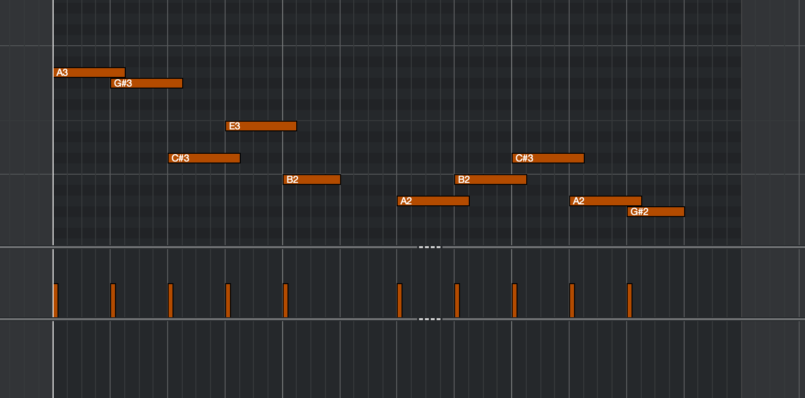

All takes are Areia v1.2.0:
Patch: 6 Celli - Legato Fingered
Sample Start: -250ms
Dynamic Range: 50%
Vibrato: 100%
Mix: Modern
Reverb: No
Velocity curve: standard
All midi notes are quantized and set to 64 velocity.
|

Midi notes without overlap |

Midi notes with overlap |
| Dynamics 0% | Dynamics 50% | Dynamics 100% | |
|---|---|---|---|
| Leg. Smooth 0% |
No overlap: With overlap: |
No overlap: With overlap: |
No overlap: With overlap: |
| Leg. Smooth 50% |
No overlap: With overlap: |
No overlap: With overlap: |
No overlap: With overlap: |
| Leg. Smooth 100% |
No overlap: With overlap: |
No overlap: With overlap: |
No overlap: With overlap: |